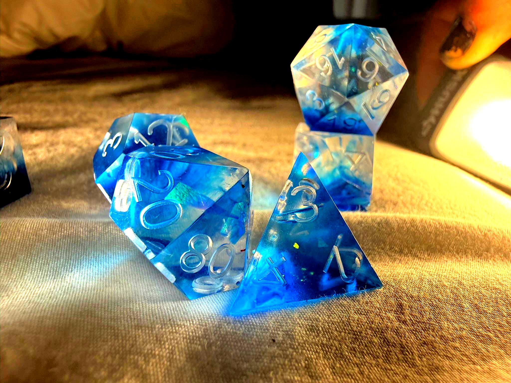

Artifact Preview

A documented original of depth and clarity, Boroglass Blue stands as a singular artifact of reflected light, controlled color, and preserved form. Entered into the Gyre & Wabe archive as an authenticated original, it occupies a precise and luminous place in the house archive.
